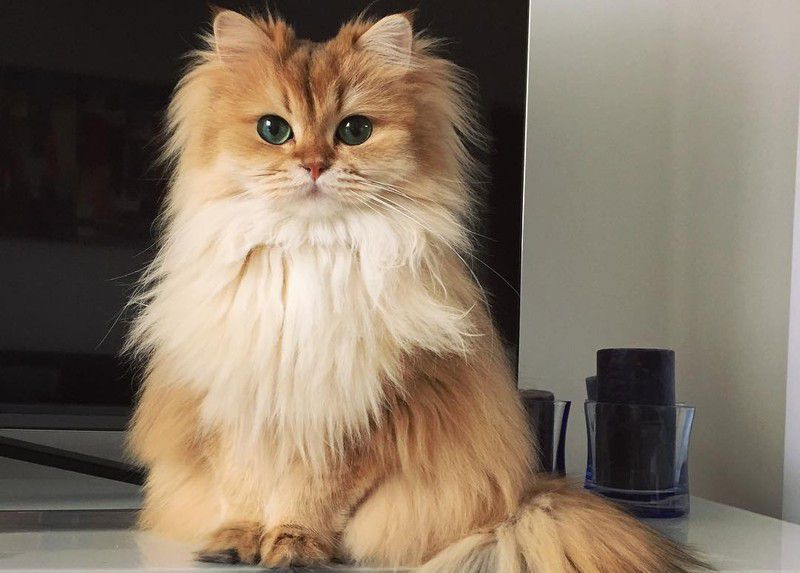

Ваш гід у світі котячої грації
Дізнайтеся все найцікавіше про пухнастих компаньйонів, які роблять наше життя яскравішим.
Чому коти?
Незалежність
Коти відомі своєю незалежною натурою, що робить їх ідеальними компаньйонами для зайнятих людей.
Ласкавість
Незважаючи на незалежність, коти можуть бути неймовірно ласкавими та ніжними.
Терапія
Дослідження показують, що гладити кота може знизити стрес і покращити настрій.